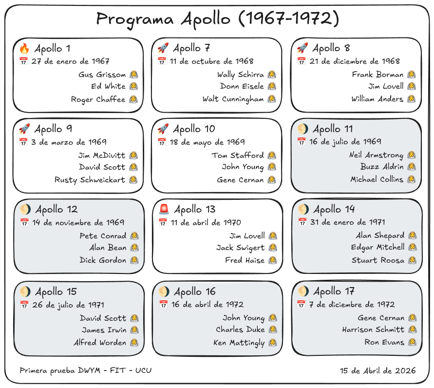

Se pide sustituir el HTML de esta página con una implementación del diseño de la figura.
Los emojis utilizados son: 🔥, 📅, 🧑🚀, 🚀, 🌖 y 🚨.
La página debe ser responsiva: si se modifican las dimensiones de la ventana del navegador, la grilla de tarjetas debe ajustarse automáticamente.
Los datos de las misiones son:
| Misión | Fecha de lanzamiento | Alunizó | Commandante | Piloto MC | Piloto ML |
|---|---|---|---|---|---|
| Apollo 1 | 27 de enero de 1967 | No | Gus Grissom | Ed White | Roger Chaffee |
| Apollo 7 | 11 de octubre de 1968 | No | Wally Schirra | Donn Eisele | Walt Cunningham |
| Apollo 8 | 21 de diciembre de 1968 | No | Frank Borman | Jim Lovell | William Anders |
| Apollo 9 | 3 de marzo de 1969 | No | Jim McDivitt | David Scott | Rusty Schweickart |
| Apollo 10 | 18 de mayo de 1969 | No | Tom Stafford | John Young | Gene Cernan |
| Apollo 11 | 16 de julio de 1969 | Sí | Neil Armstrong | Buzz Aldrin | Michael Collins |
| Apollo 12 | 14 de noviembre de 1969 | Sí | Pete Conrad | Alan Bean | Dick Gordon |
| Apollo 13 | 11 de abril de 1970 | No | Jim Lovell | Jack Swigert | Fred Haise |
| Apollo 14 | 31 de enero de 1971 | Sí | Alan Shepard | Edgar Mitchell | Stuart Roosa |
| Apollo 15 | 26 de julio de 1971 | Sí | David Scott | James Irwin | Alfred Worden |
| Apollo 16 | 16 de abril de 1972 | Sí | John Young | Charles Duke | Ken Mattingly |
| Apollo 17 | 7 de diciembre de 1972 | Sí | Gene Cernan | Harrison Schmitt | Ron Evans |